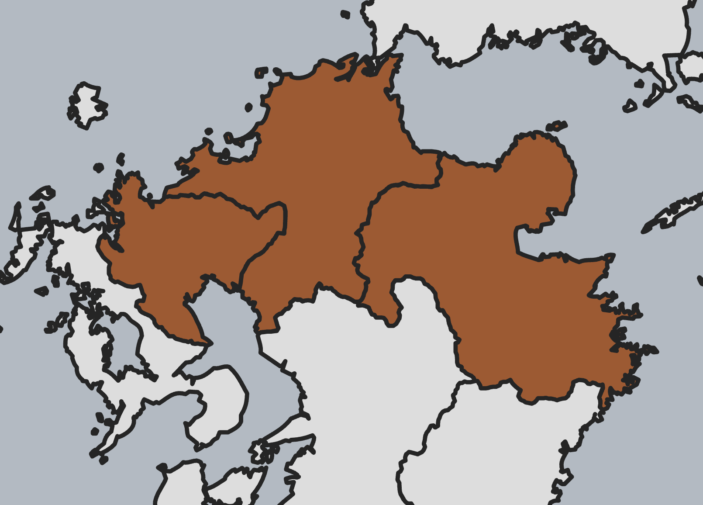

台灣虎航 · IT246已訂
TPE · 桃園07:10
HSG · 佐賀10:35
桃園機場 · 第一航廈佐賀空港
托運行李 25 公斤（兩人共用）不限件數，合計重量以 25 公斤為限。
10/18 – 10/21 · 佐賀・九重・大分

取車出發 · 山谷吊橋 · 溫泉旅館
每 3 小時內最高降雨機率 · 預報隨時間更新
送機至桃園機場第一航廈。
機場租車航廈：國內線出口往右側。
取車後直接前往九重夢大吊橋。
C2 class(A)・不指定車型・禁菸車
中文／英文／日文導航・已預約 ETC 卡
Full Coverage Plan（含 NOC 補償）
租車費 ¥59,070，於當地櫃檯支付。
訂單另列 ETC 卡費 ¥550；高速通行費另計。
預計 16:00 入住。本館 2 樓邊間和室，47㎡，天然木質空間與九重連山景觀；在「山恵の湯」享受天然溫泉。
晚餐：みやび會席
兩位主餐皆選大分和牛壽喜燒。
另加點：馬刺 2 份、和牛里肌鐵板燒（約 70g）2 份。
兩人合計 ¥71,800・已刷卡付款
含住宿、早晚餐、上述加點與入湯稅。
登山飯糰 ¥750／份
入住時再決定是否額外加購，作為隔天登山午餐；原本的早餐照常享用。
照片：九重星生ホテル官網（客房、溫泉）；壽喜燒照片：食べログ・G‐G-MOMOCHI（2013 年住客照片）；馬刺照片由旅伴提供。料理為參考，實際菜色與擺盤依當日供應為準。
早餐後上山 · 今晚住溫泉山莊
每 3 小時內最高降雨機率 · 預報隨時間更新
住宿含早餐。用餐後開車前往長者原登山口停車場，預計 08:30 抵達。
目前安排大部屋；入住當天若有個室空房，山莊會優先安排個室，實際房型以當天安排為準。
照片：大分縣 edit Oita · 山景浴池與溫泉設施示意，非即時照片。
山區之後 · 大分住宿 · 20:30 燒肉
每 3 小時內最高降雨機率 · 預報隨時間更新
在山莊用完早餐後，經雨ヶ池越沿原路下山，返回長者原駐車場取車。
途中景點與午餐待安排。
今晚入住大分市區，欣賞飯店與露天浴池的日夜景色。
照片由旅伴提供；客房與設施為示意，非指定房型。
嚴選黑毛和牛燒肉套餐，主打 A5 黑毛和牛極上牛小排與極上里肌。
每人 ¥9,350（含稅）
兩人套餐合計 ¥18,700；追加點餐另計。
照片為餐廳與料理示意，實際菜色依預約套餐及當日供應為準。
14:00 還車 · 虎航帶我們回家
每 3 小時內最高降雨機率 · 預報隨時間更新
住宿含早餐，用餐後整理行李。